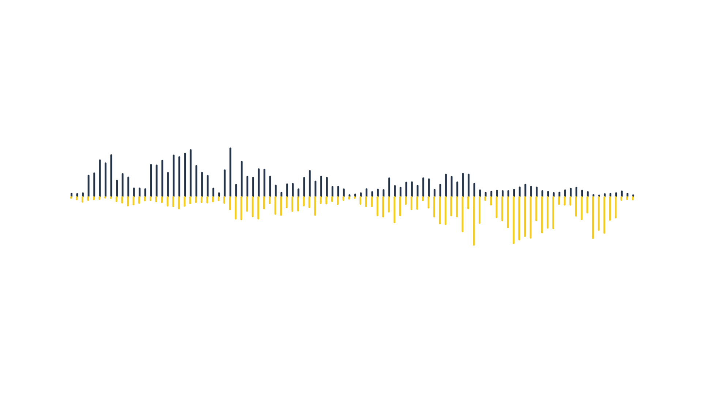
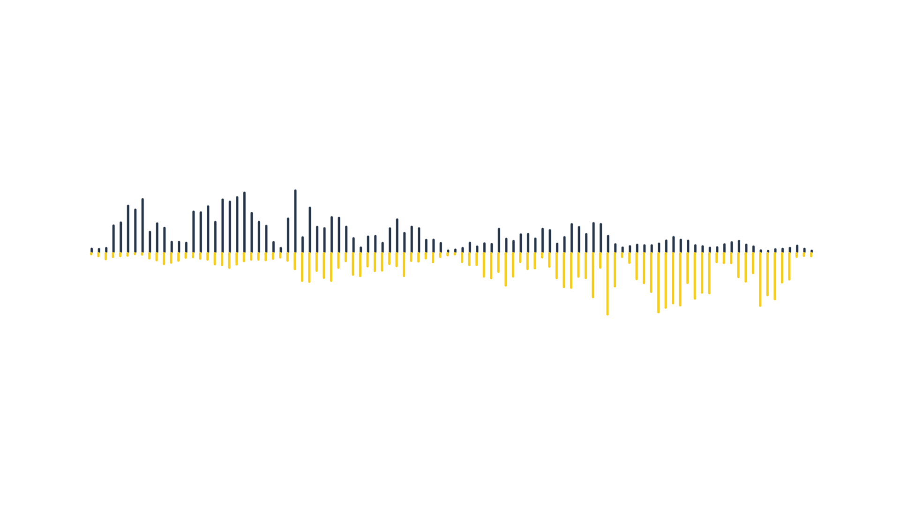

"We bring the music"
"We bring the music"
Deezer est né le 22 août 2007. Faisant suite à Blogmusik.net, créé par Daniel Marhely en juin 2006
dans la société Alyza Media (cofondée avec Jonathan Amouyal et Cedrik Haziza),
Deezer est cofondé par Jonathan Benassaya, alors étudiant à l'ESSEC.
Blogmusik ferme volontairement en avril 2007, sous la pression croissante de la SACEM, SDRM,
société de gestion des droits des auteurs dans le multimédia, société civile des producteurs de phonogrammes en France,
pour des raisons de violation des droits d'auteur. Le projet Deezer est alors développé au sein d'ESSEC Ventures,
incubateur de l'école de commerce parisienne.
Playlists & Radio
L'utilisateur peut consulter les dix titres les plus écoutés selon son pays,
créer ses playlists, utiliser la fonction recherche, ou encore demander un classement par ordre alphabétique des artistes,
titres ou albums.
En plus des playlists, on peut écouter des « radios » correspondant à un style musical particulier. Celles-ci choisissent aléatoirement des titres, et diffusent des titres par genre, dont on ne choisit pas les titres en particulier, comme une radio classique.
Visiter le site :
Voir le siteTélécharger gratuitement sur mobile :
Available on the
App Store
Get it on
Google Play